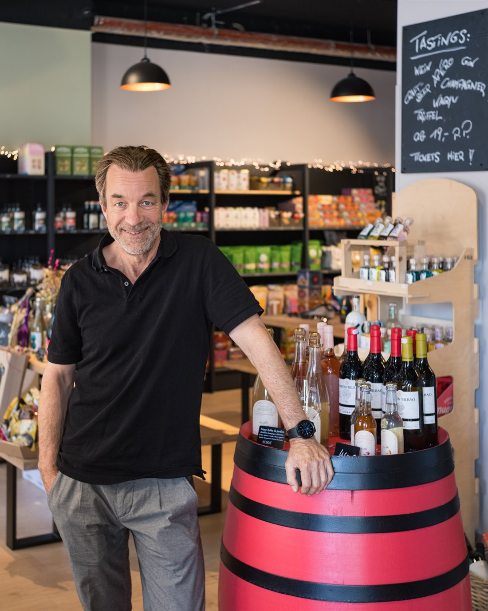

„Champagner & Trüffel Tasting bei Peter und seiner Familie — ein perfekter Abend.“
Anni AllnochBonn · Poppelsdorf
Momente voller Geschmack.
Tastings in Bonn‑Poppelsdorf.
Wein, Feinkost und besondere Genussmomente — persönlich, hochwertig und in kleiner Runde.
Kleine Gruppen · Persönliche Beratung · Feinkost vor Ort

Über uns
Von Geschichten
Von Geschichten
zu Geschmack.
Mein Name ist Peter Bohning – ich komme aus dem Journalismus. Viele Jahre war es mein Job, Geschichten zu entdecken, Menschen zuzuhören, den Blick zu schärfen. Irgendwann entstand der Wunsch, das nicht mehr in einer Redaktion, einem Schneideraum oder einem TV-Studio zu tun – sondern an einem Ort, wo Geschichten aus Begegnungen erwachsen und man gerne ein paar Minuten länger bleibt als geplant.
So entstand Genusswerte Bonn: eine Feinkost-Boutique in Poppelsdorf, in der gute Produkte, persönliche Beratung und genussvolle Tastings zusammenkommen. Ob Wein, Champagner, Gin oder Feinkost – bei uns geht es um Qualität, Herkunft und Geschmack, und um eine Atmosphäre, die zum Bleiben einlädt.
Besuch uns
Mitten in
Mitten in
Poppelsdorf.
Warum einfach nur einkaufen, wenn es auch richtig Spaß machen kann? Unsere Auswahl an Wein, Craftbeer und Spirituosen ist sorgfältig kuratiert – Qualität statt Masse, auch bei den alkoholfreien Varianten. Komm vorbei, lass dich inspirieren, probier dich durch – und wenn du auf den Geschmack kommen willst, sind unsere Tastings die beste Gelegenheit dazu.
-
Adresse
Clemens-August-Straße 38–40
53115 Bonn – Poppelsdorf - Telefon +49 228 2590 8928
- Instagram @genusswerte.bonn
Noch keinen Termin im Kopf?
Entdecke unsere Tastings.
Wein, Champagner, Gin oder Feinkost — für besondere Momente in kleiner Runde.
„Super Käse, tolle Weinauswahl, absolute Empfehlung!“
San Hu„Sehr schöner Laden, wir waren bei einer Weinprobe — passend dazu …“
Nicole La Roche-Rose„Sehr netter Besitzer. Beim Einkaufen fühlt man sich wie zu Hause.“
Marta Bu„Peter ist irre sympathisch, man spürt die Leidenschaft zu den Produkten!“
Toni Frank„Auswahl an Käse, Weinen und hausgemachten Spezialitäten ist hervorragend.“
Eugène Turpin„Ein echter Genussladen! Ideal für Weinliebhaber und Feinkostfans.“
Thomas Kölschner„Steffi und ihr Kollege haben den Trinkgenuss mit Wissen gefüttert. Gerne wieder.“
Benedikt T.„Leckere Käsesorten und Weine zu fairen Preisen. Empfehlenswert.“
Ulrike Pirwitz„Endlich ein Feinkostladen mit Charakter in Bonn.“
Johannes Berger„Das hat in Bonn wirklich gefehlt — nix wie hin ;-)“
Walid Chaar